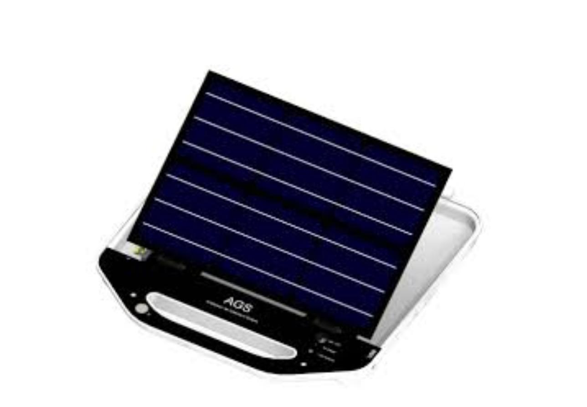
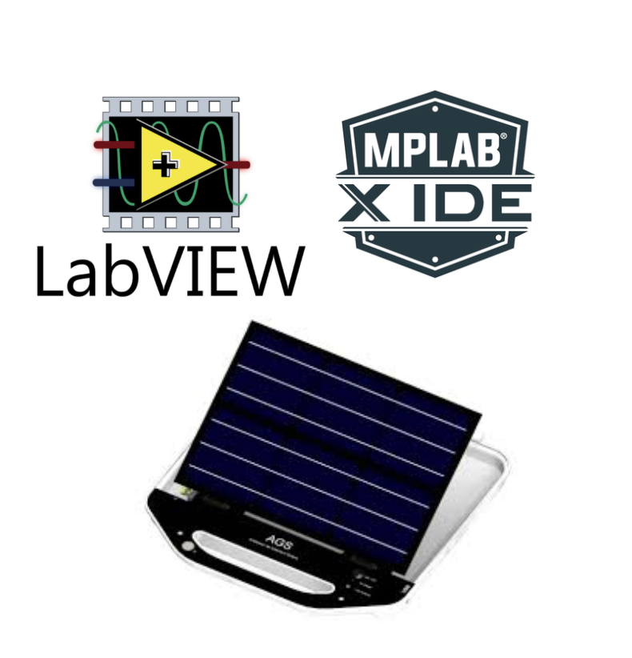
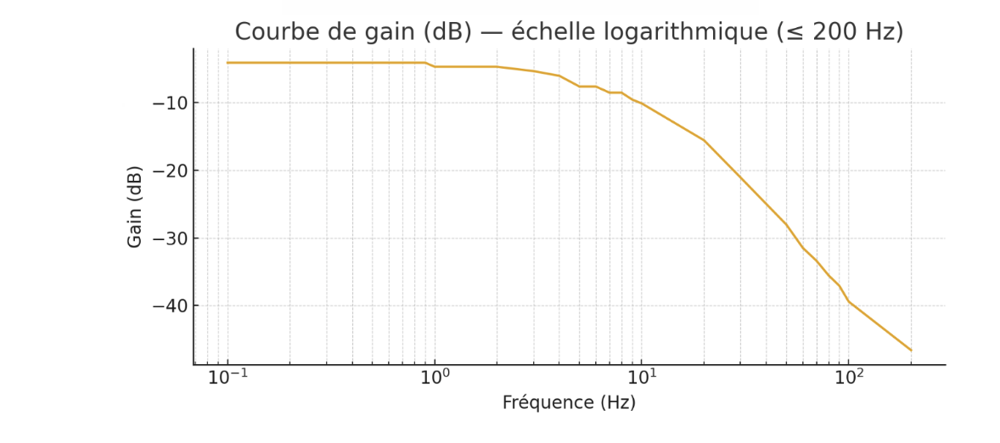
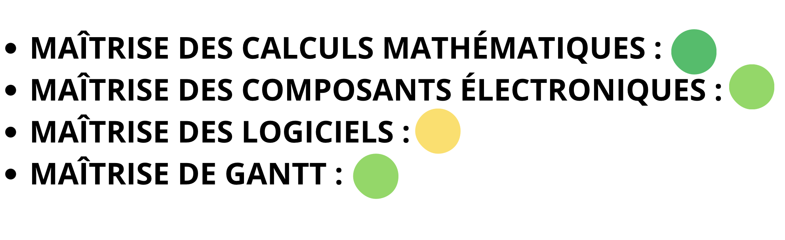
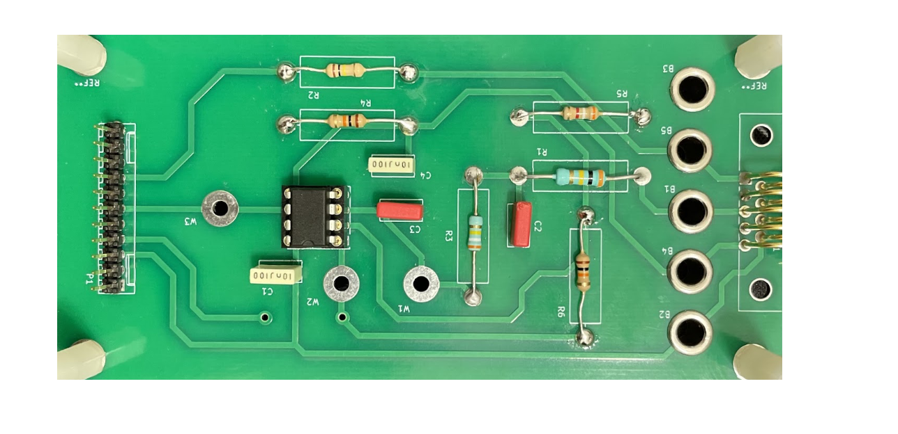

Contexte :
- Ce projet de deuxième année de BUT GEII consiste en la conception et la fabrication d'un démonstrateur photovoltaïque. L’objectif de l'AGS est d'évaluer précisément le potentiel de production d'une installation en conditions réelles.
Logiciels et outils :
- Pour ce projet, nous avons utilisé les logiciels LabVIEW et MPLAB, ainsi que la valise AGS. J'ai pris en charge l'intégralité de la partie électronique qui consistait à calculer et choisir les composants électroniques du système.
Ressenti :
- Dans la partie électronique, bien que les calculs des couples RC soient restés accessibles, j'ai dû porter une attention particulière à la sélection des composants. En effet, la valeur réelle des résistances peut varier légèrement, notamment sous l'effet de la chaleur lors de la soudure ou selon les tolérances de fabrication. Il était donc crucial de bien choisir les composants pour rester fidèle aux modèles théoriques et obtenir la courbe de réponse attendue (voir graphique ci-contre). La phase de soudure a été particulièrement fluide et rapide, ce qui nous a permis de mener le projet à bien sans pression.
Auto-Évaluation
Conclusion :
- Bien que le projet se soit déroulé sans pression particulière, quelques séances ont été supprimées du calendrier, ce qui ne nous a pas permis de finaliser l'assemblage complet des trois parties. Cependant, chaque bloc fonctionnait parfaitement de manière indépendante. Ma carte électronique (photo ci-contre) a été validée et répondait entièrement aux attentes techniques.